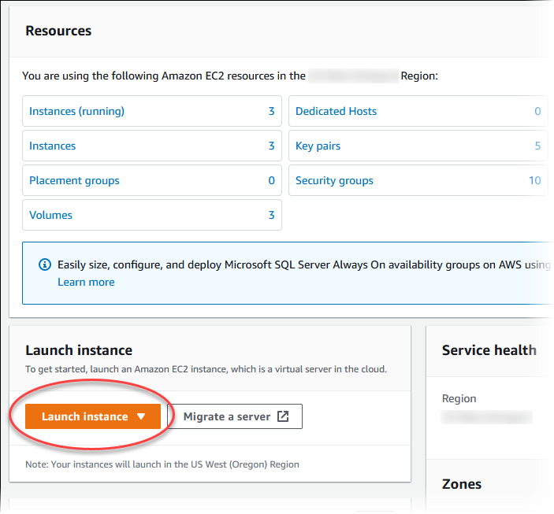
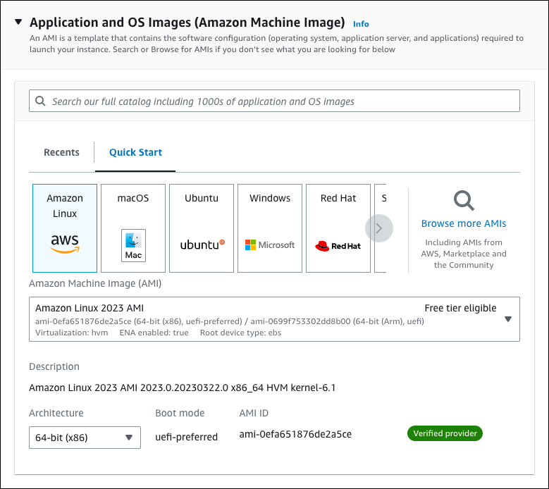
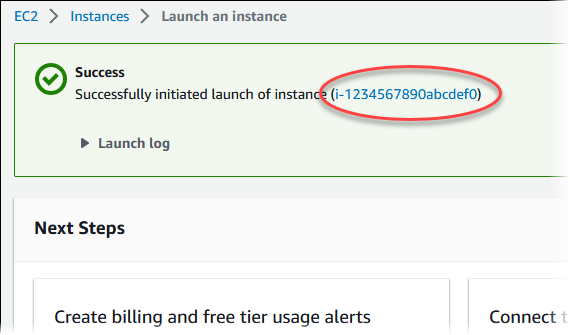
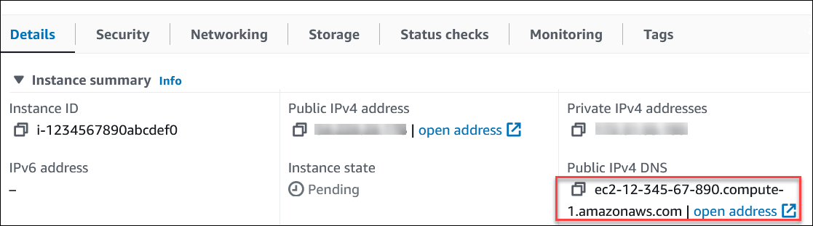
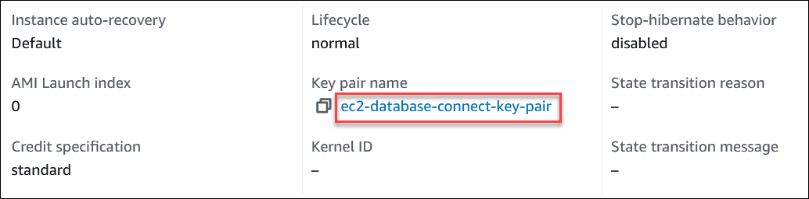
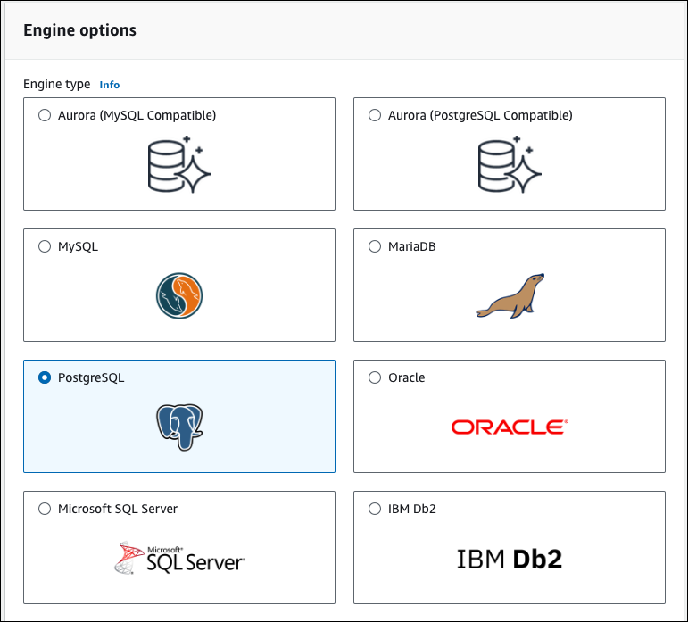
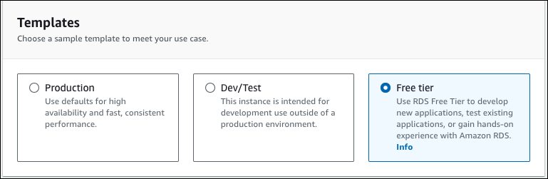
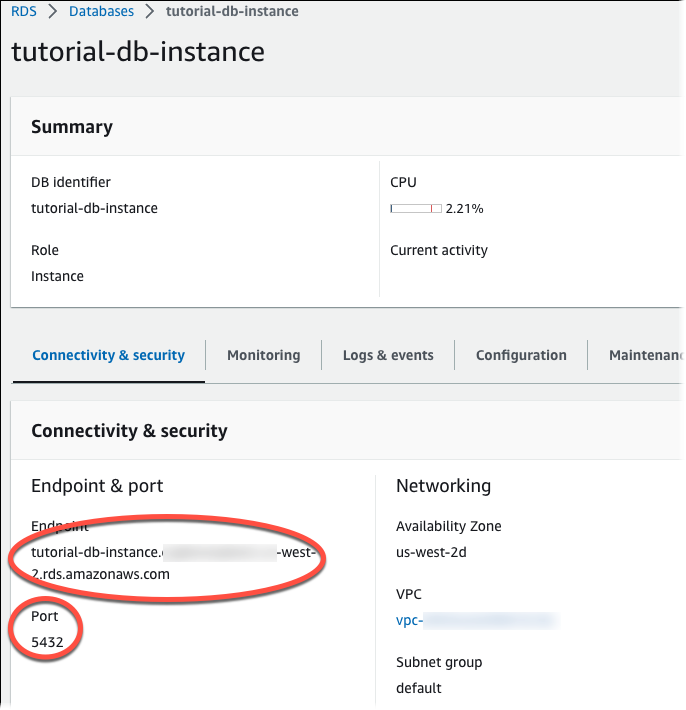

Sign in to the AWS Management Console and open the Amazon EC2 console at https://console.aws.amazon.com/ec2/.
In the upper-right corner of the AWS Management Console, choose the AWS Region where you want to create the EC2 instance.
Choose EC2 Dashboard, and then choose Launch instance.
Choose the following settings in the Launch an instance page:
a. Under Name and tags, for Name, enter tutorial-ec2-instance-web-server.
b. Under Application and OS Images (Amazon Machine Image), choose Amazon Linux, and then choose the Amazon Linux 2023 AMI. Keep the defaults for the other choices.
c. Under Instance type, choose t2.micro.
d. Under Key pair (login), choose a Key pair name to use an existing key pair. To create a new key pair for the Amazon EC2 instance, choose Create new key pair and then use the Create key pair window to create it.
e. Under Network settings, set these values and keep the other values as their defaults:
For Allow SSH traffic from, Choose the source of SSH connections to the EC2 instance.
You can choose My IP if the displayed IP address is correct for SSH connections.
Otherwise, you can determine the IP address to use to connect to EC2 instances in your VPC using Secure Shell (SSH). To determine your public IP address, in a different browser window or tab, you can use the service at https://checkip.amazonaws.com. An example of an IP address is 203.0.113.25/32.
In many cases, you might connect through an internet service provider (ISP) or from behind your firewall without a static IP address. If so, make sure to determine the range of IP addresses used by client computers.
Warning: If you use 0.0.0.0/0 for SSH access, you make it possible for all IP addresses to access your public instances using SSH. This approach is acceptable for a short time in a test environment, but it's unsafe for production environments. In production, authorize only a specific IP address or range of addresses to access your instances using SSH.
Turn on Allow HTTPs traffic from the internet.
Turn on Allow HTTP traffic from the internet.
f. Leave the default values for the remaining sections.
g. Review a summary of your instance configuration in the Summary panel, and when you're ready, choose Launch instance.
On the Launch Status page, note the identifier for your new EC2 instance (e.g., i-1234567890abcdef0).
Choose the EC2 instance identifier to open the list of EC2 instances, and then select your EC2 instance.
In the Details tab, note the following values, which you need when you connect using SSH:
a. In Instance summary, note the value for Public IPv4 DNS.
b. In Instance details, note the value for Key pair name.
Wait until the Instance state for your instance is Running before continuing.
Complete Create an Amazon RDS DB instance.
Sign in to the AWS Management Console and open the Amazon RDS console at https://console.aws.amazon.com/rds/.
In the upper-right corner of the AWS Management Console, check the AWS Region. It should be the same as the one where you created your EC2 instance.
In the navigation pane, choose Databases.
Choose Create database.
On the Create database page, choose Standard create.
For Engine options, choose PostgreSQL.
For Templates, choose Free tier.
In the Availability and durability section, keep the defaults.
In the Settings section, set these values:
In the Instance configuration section, set these values:
In the Storage section, keep the defaults.
In the Connectivity section, set these values and keep the other values as their defaults:
In the Database authentication section, make sure Password authentication is selected.
Open the Additional configuration section, and enter sample for Initial database name. Keep the default settings for the other options.
To create your PostgreSQL DB instance, choose Create database.Your new DB instance appears in the Databases list with the status Creating.
Wait for the Status of your new DB instance to show as Available. Then choose the DB instance name to show its details.
In the Connectivity & security section, view the Endpoint and Port of the DB instance.
Note the endpoint and port for your DB instance. You use this information to connect your web server to your DB instance.
Complete Install a web server on your EC2 instance.
Connect to your EC2 instance and install the web server.
Connect to the EC2 instance that you created earlier by following the steps in Connect to your Linux instance in the Amazon EC2 User Guide for Linux Instances.
We recommend that you connect to your EC2 instance using SSH. If the SSH client utility is installed on Windows, Linux, or Mac, you can connect to the instance using the following command format:
ssh -i location_of_pem_file ec2-user@ec2-instance-public-dns-name
For example, assume that ec2-database-connect-key-pair.pem is stored in /dir1 on Linux, and the public IPv4 DNS for your EC2 instance is ec2-12-345-678-90.compute-1.amazonaws.com. Your SSH command would look as follows:
ssh -i /dir1/ec2-database-connect-key-pair.pem ec2-user@ec2-12-345-678-90.compute-1.amazonaws.com
Get the latest bug fixes and security updates by updating the software on your EC2 instance. To do this, use the following command.
Note: The -y option installs the updates without asking for confirmation. To examine updates before installing, omit this option.
sudo dnf update -y
After the updates complete, install the Apache web server, PostgreSQL software using the following commands. This command installs multiple software packages and related dependencies at the same time.
sudo dnf install -y httpd php php-pgsql postgresql15
If you receive an error, your instance probably wasn't launched with an Amazon Linux 2023 AMI. You might be using the Amazon Linux 2 AMI instead. You can view your version of Amazon Linux using the following command.
cat /etc/system-release
Start the web server with the following command:
sudo systemctl start httpd
You can test that your web server is properly installed and started. To do this, enter the public Domain Name System (DNS) name of your EC2 instance in the address bar of a web browser, for example: http://ec2-42-8-168-21.us-west-1.compute.amazonaws.com. If your web server is running, then you see the Apache test page.
If you don't see the Apache test page, check your inbound rules for the VPC security group that you created in Tutorial: Create a VPC for use with a DB instance (IPv4 only). Make sure that your inbound rules include one allowing HTTP (port 80) access for the IP address to connect to the web server.
Note: The Apache test page appears only when there is no content in the document root directory, /var/www/html. After you add content to the document root directory, your content appears at the public DNS address of your EC2 instance. Before this point, it appears on the Apache test page.
Configure the Web Server to Start with Each System Boot
Configure the web server to start with each system boot using the following command:
sudo systemctl enable httpd
To allow ec2-user to manage files in the default root directory for your Apache web server, modify the ownership and permissions of the /var/www directory. There are many ways to accomplish this task. In this tutorial, you add ec2-user to the apache group, to give the apache group ownership of the /var/www directory and assign write permissions to the group.
Add the ec2-user user to the apache group.
sudo usermod -a -G apache ec2-user
Log out to refresh your permissions and include the new apache group.
exit
Log back in again and verify that the apache group exists with the groups command.
groups
Your output looks similar to the following:
ec2-user adm wheel apache systemd-journal
Change the group ownership of the /var/www directory and its contents to the apache group.
sudo chown -R ec2-user:apache /var/www
Change the directory permissions of /var/www and its subdirectories to add group write permissions and set the group ID on subdirectories created in the future.
sudo chmod 2775 /var/www
find /var/www -type d -exec sudo chmod 2775 {} \;
Recursively change the permissions for files in the /var/www directory and its subdirectories to add group write permissions.
find /var/www -type f -exec sudo chmod 0664 {} \;
Now, ec2-user (and any future members of the apache group) can add, delete, and edit files in the Apache document root. This makes it possible for you to add content, such as a static website or a PHP application.
While still connected to your EC2 instance, change the directory to /var/www and create a new subdirectory named inc.
cd /var/www mkdir inc cd inc
Create a new file in the inc directory named dbinfo.inc, and then edit the file by calling nano (or the editor of your choice).
>dbinfo.inc nano dbinfo.inc
Add the following contents to the dbinfo.inc file. Replace db_instance_endpoint with your DB instance endpoint, without the port, for your DB instance.
Note: We recommend placing the user name and password information in a folder that isn't part of the document root for your web server. Doing this reduces the possibility of your security information being exposed.
<?php
define('DB_SERVER', 'db_instance_endpoint');
define('DB_USERNAME', 'tutorial_user');
define('DB_PASSWORD', 'master password');
define('DB_DATABASE', 'sample');
?>
Save and close the dbinfo.inc file. If you are using nano, save and close the file by using Ctrl+S and Ctrl+X.
Change the directory to /var/www/html.
cd /var/www/html
Create a new file in the html directory named SamplePage.php, and then edit the file by calling nano (or the editor of your choice).
>SamplePage.php nano SamplePage.php
Add the following contents to the SamplePage.php file:
Error creating table.
");Save and close the SamplePage.php file.
Save and close the SamplePage.php file.
Verify that your web server successfully connects to your DB instance by opening a web browser and browsing to http://EC2 instance endpoint/SamplePage.php, for example: http://ec2-12-345-67-890.us-west-2.compute.amazonaws.com/SamplePage.phps
You can use SamplePage.php to add data to your DB instance. The data that you add is then displayed on the page. To verify that the data was inserted into the table, install MySQL client on the Amazon EC2 instance. Then connect to the DB instance and query the table.
Congratulations on completing the Web Server and Amazon RDS Tutorial! You've successfully set up your web server, connected it to an Amazon RDS instance, tested your setup, and learned how to clean up after yourself when you're done. Keep up the great work, and feel free to explore more advanced topics as you continue your journey in web development and cloud computing